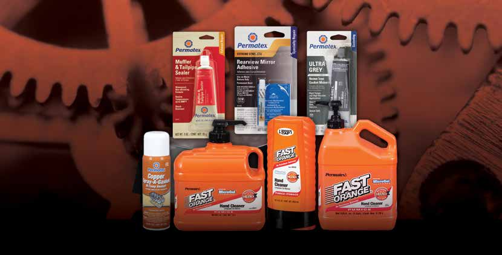
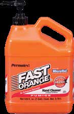
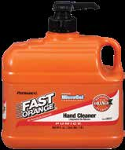
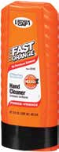
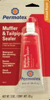
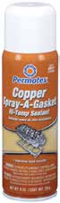
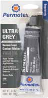
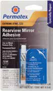

Limpiamanos Fast Orange
Potente limpiamanos formulado a base de componentes cítricos naturales y piedra pómez para remover la suciedad más difícil, y acondicionado con lanolina, glicerina y aloe vera para cuidar la piel.
No contiene amoníaco ni químicos agresivos para la piel ni para el medioambiente. No necesita el uso del agua. Deja un aroma cítrico que realza la limpieza de las manos.
Sin agua: Se aplica y se frotan las manos hasta disolver la suciedad. Biodegradable: Fórmula eco-sustentable libre de químicos agresivos. Cuida la piel: Evita el agrietamiento y sequedad. Remueve: Aceites, grasa, resinas, tinta, epoxis, pintura y adhesivos.
Presentaciones
| Producto | Código | Contenido |
|---|---|---|
| Fast Orange | 550158 | 443.5 ml |
| Fast Orange | 550159 | 1.8 Litros |
| Fast Orange | 550160 | 3.78 Litros |
Mantenimiento Automotor
Productos especializados para el sector automotriz.




| Producto | Presentación | Aplicación |
|---|---|---|
| Ultra Grey 100% Silicona | Gris 99g - 550153 | Sellador RTV silicona para juntas de motor. -62°C a +343°C. |
| Sellador Cobre Altas Temp. | Aerosol 255g - 550260 | Sellador en aerosol para juntas. Disipa calor. -45°C a +260°C. |
| Reparador Caños de Escape | Pomo 85g - 550140 | Sella agujeros en silenciadores y caños. Resiste hasta 1000°C. |
| Kit Espejo Retrovisor | Kit 0.9ml - 550250 | Activador + adhesivo para espejo retrovisor al parabrisas. |
Fast Orange es biodegradable y aprobado por ANMAT N17778. No contiene amoníaco ni químicos agresivos. Seguro para la piel y el medio ambiente.